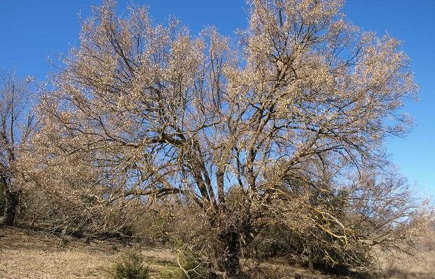
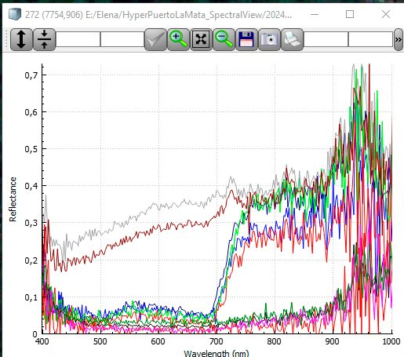
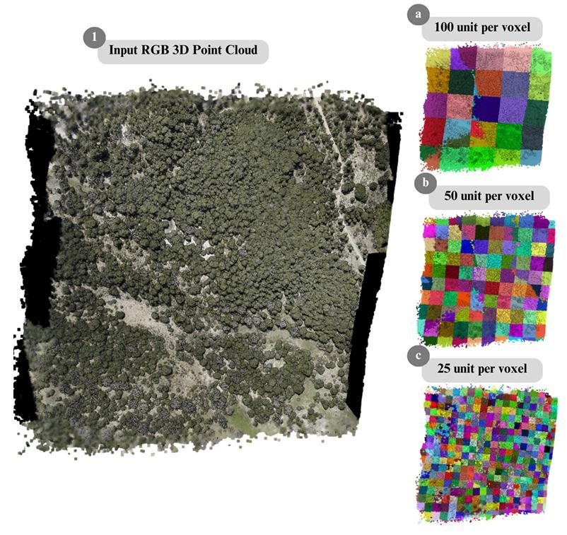
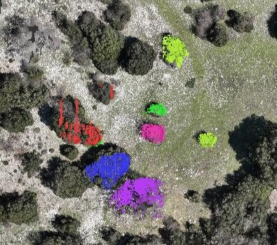

El proyecto
NATUREYE estudia cómo digitalizar y modelar en 3D un espacio natural a partir de datos tomados con drones y satélites, y cómo usar ese modelo para simular su evolución. El trabajo se ha hecho en el Parque Natural de Sierra Mágina (Jaén).
Se han hecho vuelos en distintas estaciones del año con sensores LiDAR, hiperespectrales, multiespectrales, térmicos y cámaras RGB, y se han añadido series de imágenes Sentinel-2 y registros meteorológicos. Toda la información se organiza en una estructura de vóxeles en la que cada celda guarda su geometría, su respuesta espectral y las variables climáticas.
Con esos datos se localiza cada árbol, se identifica su especie por su firma espectral y su forma, y se obtiene su estructura en 3D. Los métodos están integrados en GEU, la plataforma de visualización y análisis del grupo, y en un escenario de Unreal Engine que muestra cómo podría cambiar la vegetación con más temperatura y menos lluvia.
- Coordinación y difusiónPlanificación, seguimiento y transferencia de resultados.
- Datos multiescalaCaptura y procesamiento de datos multitemporales y multisensoriales en un sistema 3D.
- Clasificación de especiesIdentificación automática y parametrización de especies arbóreas.
- Morfología 3DModelado guiado y caracterización volumétrica de cada individuo.
- Simulación climáticaRespuesta de las especies ante escenarios climáticos futuros.
- Herramientas 3D/4DPlataforma científica y aplicación para visitantes.
Zonas de estudio



Cómo se ha hecho
-

Adquisición
Vuelos estacionales con LiDAR (Phoenix Scout-Ultra), cámara hiperespectral Headwall Nano-Hyperspec (270 bandas, 400–1000 nm), multiespectral, térmica y RGB. Se completan con series Sentinel-2 y datos meteorológicos.
-

Procesamiento
Ortorrectificación de las imágenes hiperespectrales, ortomosaicos, nubes de puntos LiDAR y modelos digitales de elevación de las tres zonas.
-

Fusión en GEU
La información hiperespectral y multiespectral se proyecta sobre la nube de puntos y se organiza en vóxeles con geometría, reflectancia y clima.
-

Individuos y especies
Filtrado de suelo y sombras, identificación de cada árbol y clasificación por firma espectral, afinada con la forma de la copa. Un flujo híbrido LiDAR-hiperespectral recupera especies objetivo a partir de pocos ejemplos.
-

Simulación
Escenario 3D en Unreal Engine construido con los datos reales para visualizar la vegetación con más temperatura y menos precipitación.
Simulación predictiva de especies
Dentro del proyecto se ha desarrollado un módulo de simulación predictiva integrado en GEU. El módulo entrena modelos de distribución de especies con Random Forest y MaxEnt a partir de registros de presencia (GBIF) y variables bioclimáticas (WorldClim), y proyecta su distribución con las proyecciones climáticas CMIP6 en distintos escenarios socioeconómicos (de SSP1 a SSP5) hasta 2070 y 2100.
Se ha aplicado a Sierra Mágina (Puerto de la Mata) y, como zona de contraste, al Parque Nacional de Ordesa y Monte Perdido. Los modelos alcanzan un AUC medio de 0,88 con Random Forest y 0,87 con MaxEnt. Los resultados se ven en GEU como nubes de puntos y mapas de calor, y en TerraPredict, una aplicación web con visores 2D y 3D, comparador de escenarios y descarga de resultados.
Trabajo Fin de Grado de Alberto Jiménez Expósito, «Simulación predictiva y visualización de escenarios naturales integrando información multisensorial» (Universidad de Jaén, 2026). Dirigido por Juan Manuel Jurado Rodríguez y David Jurado Rodríguez.


Imágenes del proyecto


Resultados
Artículos en revistas
- 2026A multi-scale inventory for sustainable olive farming using remote sensing and data fusionLatorre-Hortelano, P., Jurado-Rodríguez, D., Garrido-Almonacid, A., Parras-Rosa, M., Jurado, J. M. Smart Agricultural Technology, 14, 102230 · Acceso abierto
- 2026Generation of synthetic labeled datasets for anomaly detection in heritage architectureJurado-Rodríguez, D., Garrido, A., Feito, F. R., Jurado, J. M. Graphical Models, 145, 101325 · Acceso abierto
- 2025Virtualized point cloud renderingCollado, J. A., López, A., Jurado, J. M., Jiménez, J. R. IEEE Transactions on Visualization and Computer Graphics, 31(10), 8026–8039 · Copia abierta en Zaguán
- 20243D modeling of rural environments from multiscale aerial imageryJurado-Rodríguez, D., Latorre-Hortelano, P., René-Domínguez, L., Ortega, L. M. Computers & Graphics, 122, 103982
Artículos en revisión
- 2026A Synthetic Hyperspectral Data Generation and Dimensionality Reduction Pipeline for Spectral Preservation and Classification. Domínguez-Fuentes, L. R., Jiménez-Pérez, J. R., Jurado, J. M., Jurado-Rodríguez, D. En revisión en Applied Computing and Geosciences.
- 2026A Hybrid LiDAR–Hyperspectral Workflow for Target-Driven Tree-Species Retrieval in Mediterranean Forests. Sanabria, R., Carmona, E., Jurado-Rodríguez, D., Jurado, J. M. En preparación para un nuevo envío.
Congresos
- 2026Tree Extraction from UAV LiDAR and Hyperspectral Data. Sanabria, R., Carmona, E., Jurado-Rodríguez, D., Jurado, J. M. CEIG 2026, València.
- 2025Assessing Olive Tree Detection Performance in UAV Images. Latorre-Hortelano, P., Pérez-Cano, F. D., Jurado-Rodríguez, D., Parra-Cabrera, G. IDEAL 2025, Jaén. LNCS 16239, 195–206. DOI
- 2025Individual Detection of Olive Trees Under Different Olive Planting Distributions. Latorre-Hortelano, P., Del Castillo, F., Jurado-Rodríguez, D., Ortega, L. M., Jurado, J. M. GEOProcessing 2025, Niza.
- 2025Multisensory characterization of vegetation diversity in natural environments. Sanabria, R., Carmona, E., Jurado-Rodríguez, D., Jurado, J. M. CEIG 2025, Jaén.
- 2025First steps in the dimensionality reduction of hyperspectral images of real-world scenarios based on curve representation. René-Domínguez, L., Jurado-Rodríguez, D., Jiménez, J. R., Jurado, J. M. CEIG 2025, Jaén.
- 2025Generation of synthetic labeled datasets for anomaly detection in heritage architecture. Jurado-Rodríguez, D., Garrido, A., Feito, F. R., Jurado, J. M. CEIG 2025, Jaén.
- 2025A performance evaluation of olive tree identification techniques in RGB images. Latorre-Hortelano, P., Jurado-Rodríguez, D., Parra, G., Pérez-Cano, F. D. CEIG 2025, Jaén.
- 2025Diseño metodológico para la generación de imágenes multirresolución etiquetadas. Del Castillo, F., Latorre-Hortelano, P., Jurado-Rodríguez, D., Jurado, J. M. CEIG 2025, Jaén.
- 2024Portable LiDAR scanners: precision mapping at your fingertips. Jurado-Rodríguez, D., Jurado, J. M., Enríquez, C., Feito, F. R. Web3D 2024, Guimarães. DOI
- 20243D modeling of rural environments from multiscale aerial imagery. Jurado-Rodríguez, D., Latorre-Hortelano, P., René-Domínguez, L., Ortega, L. M. CEIG 2024, A Coruña.
- 2024SAM-based detection of structural anomalies in 3D models for preserving cultural heritage. Jurado-Rodríguez, D., López, A., Jiménez, J. R., Garrido, A., Feito, F. R., Jurado, J. M. VISAPP 2024, Roma.
Tesis doctorales
- Gestión avanzada de datos procedentes de sensores a bordo de drones. José Luis Cárdenas Donoso. Defendida en 2024, sobresaliente cum laude.
- Detección individual de árboles y modelado multisensorial de entornos agroambientales. Pablo Latorre Hortelano. En curso.
- Reducción de dimensionalidad y análisis de imágenes hiperespectrales. Luis René Domínguez Fuentes. En curso.
Trabajos fin de máster y de grado
- Caracterización individual de especies arbóreas mediante análisis multisensorial y modelado 3D en entornos naturales. TFM de Elena Carmona Vallecillo, 2025.
- Simulación predictiva y visualización de escenarios naturales integrando información multisensorial. TFG de Alberto Jiménez Expósito, 2026. Ver resultados.
- Visualización en realidad mixta de escenarios naturales y agrícolas amenazados por emergencias climáticas. TFG en curso.
Software
- GEU (Geospatial and Environmental tools of UJA). Plataforma de fusión, análisis y visualización 3D. Protección solicitada en la Universidad de Jaén.
- Nimbus. Renderizado de nubes de puntos masivas, código abierto: github.com/Krixtalx/Nimbus.
Conjuntos de datos
Datos generados por el proyecto en el Parque Natural de Sierra Mágina. Se publican con licencia CC BY 4.0: se pueden reutilizar citando la fuente. Los ficheros más grandes y las coordenadas exactas de especies protegidas se facilitan bajo petición.
Grupo de Informática Gráfica y Geomática, Universidad de Jaén (2026). NATUREYE: datos multisensoriales de Sierra Mágina [conjunto de datos]. Proyecto PID2022-137938OA-I00, MICIU/AEI/10.13039/501100011033 y FEDER, UE.
| Conjunto | Zona y fecha | Formato | Tamaño | Acceso |
|---|
Formatos abiertos, en ETRS89 / UTM 30N (EPSG:25830). Se leen con QGIS, CloudCompare, PDAL o GDAL. Para pedir un conjunto: inuouja@ujaen.es, indicando el nombre del conjunto y el uso previsto.
Equipo
Equipo de investigación
- Juan Manuel Jurado RodríguezInvestigador principal · Universidad de Jaén
- Juan Roberto Jiménez PérezUniversidad de Jaén
- Carlos Enríquez TuriñoUniversidad de Jaén
- Carlos Ureña AlmagroUniversidad de Granada
- Germán Arroyo MorenoUniversidad de Granada
Equipo de trabajo
- David Jurado RodríguezUniversidad de Jaén
- Rubén Sanabria DíazUniversidad de Jaén
- Elena Carmona VallecilloUniversidad de Jaén
- Alfonso López RuizUniversidad de Zaragoza
- Antonio Jesús Perea MartosUniversidad de Sevilla
- Joaquim João SousaUniversidade de Trás-os-Montes e Alto Douro
- Luís PáduaUniversidade de Trás-os-Montes e Alto Douro